Chapter 15. Plot
Plot is a key Early Warning, Alert and Response System (EWARS) feature that facilitates easy analysis and visualization of data within the system via various chart types without any additional software support. Using this feature, administrative users (Account Administrators and Geographical Administrators) can easily provide data for common emergency reports, presentations or summaries in a visual format for research, monitoring, annual comparisons and further analysis needs.
 You ca You ca |
nnot save charts within plot. Once you complete a chart, you need to download it and save it in your own drives for further use. |
It supports the following chart types (Fig. 15.1).
Fig. 15.1. Chart types supported
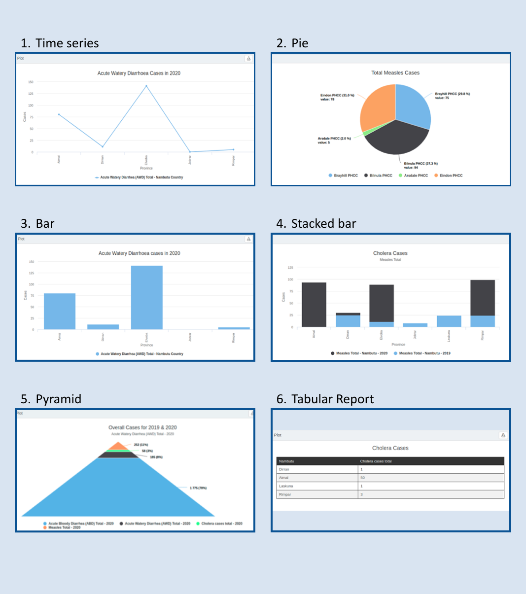
 Note: both the data and the related indicators need to be defined in the system to plot a chart. Note: both the data and the related indicators need to be defined in the system to plot a chart. |
15.1 Defining settings for various chart types
Follow the instructions below to plot different chart types.
- Select Menu > Analysis > Plot, and the screen below appears:
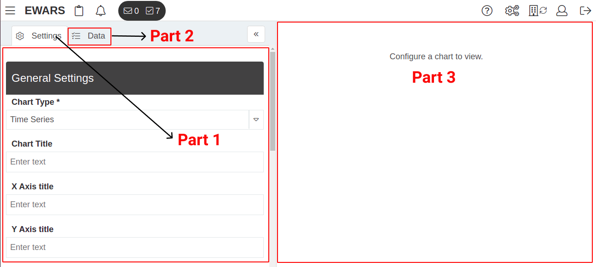
The three highlighted parts in the above figure are as follows.
Part 1: Settings – this helps you define chart components once you decide the chart type.
Part 2: Data – this lets you use data available in the system based on the indicators.
Part 3: Chart rendering area – this is the area where the plot is developed.
By default, the Settings tab (Part 1 in the screenshot) is open. Follow the steps below to plot a chart.
Select a Chart Type that is to be generated from the drop-down menu (e.g. Time Series).
Populate the Chart Title field to give a title to appear at the top of the chart.
Populate the X Axis title field to give a title to the horizontal axis of the chart; this is displayed below the X axis.
Populate the Y Axis title field to give a title to the vertical axis of the chart; this is displayed to the side of the Y axis.
Set Show legend as Yes if you want legends on the chart; these help you to differentiate variables in the chart, as shown below:
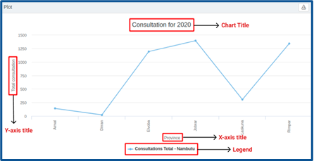
- Set Show slices with no data as Yes if you want to display a graph that includes data with zero value, as shown below:
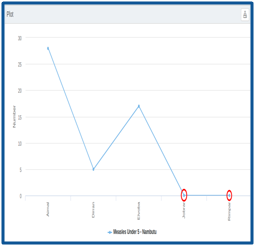
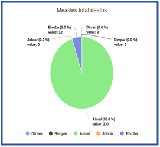
Select the Location for which you want to generate the chart.
Select a Group By field; this allows you to group data based on Time Interval, Location or Indicators, according to your requirements. (The Indicators option in Group By is only available for Pie and Pyramid charts).
To group by Time Interval, select a suitable interval (e.g. Daily, Weekly, Monthly or Yearly) from the drop-down menu. If the selection is Weekly, for example, the chart is produced with weekly aggregated data. The X axis of the chart will show the week number and the Y axis will show the indicator data count.
To group by Location, select a suitable location type (e.g. Province or District). If the selection is Province, for example, the chart is rendered against aggregated provincial data. The X axis of the chart will show the provinces and the Y axis will show the indicator data count.
To group by Indicators (option available for Pie and Pyramid charts only), a slice is shown for each added indicator. If you have added three indicators in the pie chart, for example, three slices of the pie chart are visible.
- Set Compare Years as Yes if you want to compare data from multiple years for selected periods. Once you set Compare Years as Yes, you need to populate the Select years to compare field (e.g. 2019, 2020 and 2021), as show below:
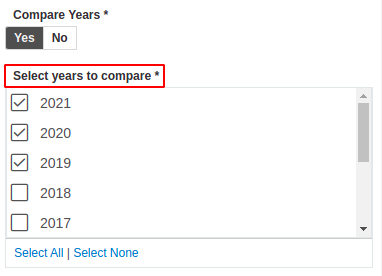
- Select the Start date and End date in the calendar, as shown below:
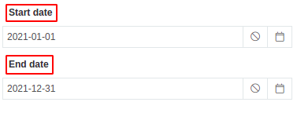
- Click on the tab (Part 2 in the screenshot) > click on the add icon to add an indicator data series, and the screen below appears:
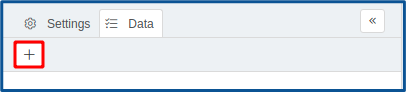
How to use data is addressed under each chart type topic below.
- Once you input the data above, the chart is created automatically in the Chart rendering area (Part 3 in the screenshot).
15.2 Plotting data on a time series chart
The time series chart is a line chart. This guide uses the following two examples to demonstrate how to plot data on a time series for the fictional country Nambutu.
Example 1. Plot provincial total acute watery diarrhoea cases for Nambutu for 2020.
Select Menu > Analysis > Plot. Set Chart Type as Time Series > enter “Acute Watery Diarrhoea Cases in 2020” as the Chart Title > enter “Province” as the X Axis title > enter “Cases” as the Y Axis title > set Show legend as Yes, set Show slices with no data as Yes > select the location Nambutu > set Group By as Location > set Location type as Provinces > set Compare Years as No > select the Start date 2020-01-01 in the calendar > select the End date 2020-12-31 in the calendar.
Click on the Data tab > click on the add icon > select the Indicator (e.g. Acute Watery Diarrhoea (AWD) Total).
The chart is generated, as shown below:
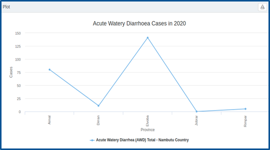
The blue line represents total AWD cases in 2020, and it is plotted against provinces in Nambutu.
Example 2. Plot and compare provincial total acute watery diarrhoea cases for Nambutu for the years 2019 and 2020.
Select Menu > Analysis > Plot. Set Chart Type as Time Series > enter “Acute Watery Diarrhoea Cases in in 2019 & 2020” as the Chart Title > enter “Province” as the X Axis title > enter “Cases” as the Y Axis title > set Show legend as Yes > set Show slices with no data as Yes > select the location Nambutu > set Group By as Location > set Location type as Provinces > set Compare Years as Yes > select the years 2019 and 2020 > select the Start date Jan 01 in the calendar > select the End date Dec 31 in the calendar.
Click on the Data tab > click on the add icon > select Acute Watery Diarrhoea (AWD) Total.
The chart is generated, as shown below:
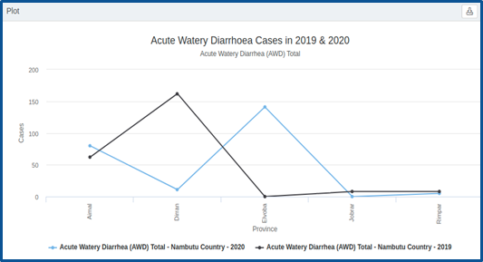
The blue line represents total AWD cases in 2020 and the black line represents total AWD cases in 2019, plotted against provinces in Nambutu.
15.3 Plotting data on a pie chart
A pie chart is a categorical chart type. It displays data in different slices, enabling you to plot suitable scenarios. For demonstration purposes, this guide uses the following example.
Example 1. Plot total measles cases by health facility from 1 June 2020 to 13 December 2020.
Select Menu > Analysis > Plot. Set Chart Type as Pie > enter “Total Measles Cases” as the Chart Title > set Show legend as Yes > set Show slices with no data as No > select the location Nambutu > set Group By as Location > set Location type as Health Facility > set Compare Years as No > select the Start date 2020-06-01 in the calendar > select the End date 2020-12-31 in the calendar.
Click on the Data tab > click on the add icon > select Health > Morbidity > Measles > Measles Total.
The chart is generated, as shown below:
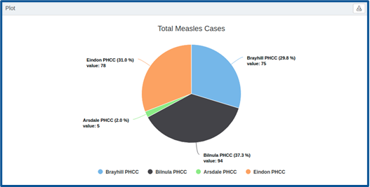
15.4 Plotting data on a bar chart
A bar chart helps you represent categorical data with rectangular bars, the heights/lengths of which are proportional to the values they represent. This guide uses the following example to demonstrate this.
Example 1.** Plot provincial total acute watery diarrhoea cases for Nambutu from 1 January 2020 to 31 December 2020.
Select Menu > Analysis > Plot. Set Chart Type as Bar > enter “Acute Watery Diarrhoea cases in 2020” as the Chart Title > enter “Province” as the X Axis title > enter “Cases” as the Y Axis title > set Show legend as Yes > set Show slices with no data as Yes > select the location Nambutu > set Group By as Location > set Location type as Provinces > set Compare Years as No > select the Start date 2020-01-01 in the calendar > select the End date 2020-12-31 in the calendar.
Click on the Data tab > click on the add icon and select the Indicator you want to plot (e.g. Acute Watery Diarrhoea (AWD) Total).
The chart is generated, as shown below:
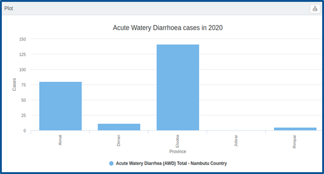
15.5 Plotting data on a stacked bar chart
A stacked bar chart is a chart type with rectangular bars used to break down and compare parts of a whole. Each rectangular bar stands for the whole, while segments within the bar denote different parts of the whole. For demonstration purposes, this guide uses the following example.
Example 1.** Plot and compare total cholera cases for Nambutu by province for 2019 and 2020.
Select Menu > Analysis > Plot. Set Chart Type as Stacked Bar > enter “Cholera Cases” as the Chart Title > enter “Province” as the X Axis title > enter “Cases” as the Y Axis title > set Show legend as Yes > set Show slices with no data as Yes > select the location Nambutu > set Group By as Location > set Location type as Provinces > set Compare Years as Yes > select years 2019 and 2020 > select the Start date Jan 01 in the calendar > set the End date Dec 31 in the calendar.
Click on the Data tab > click on the add icon > select Health > Morbidity > Cholera > Cholera Total.
The chart is generated, as shown below:
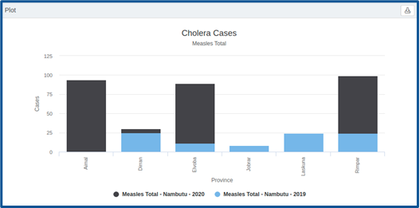
15.6 Plotting data on a pyramid chart
A pyramid chart represents data in the shape of a triangle or pyramid. These are best used when the data need to be organized hierarchically. For demonstration purposes, this guide uses the following example.
Example 1. Plot total measles cases data, total cholera cases data, total acute watery diarrhoea cases data and total acute bloody diarrhoea cases data for Nambutu for 2019 and 2020.
Select Menu > Analysis > Plot. Set Chart Type as Pyramid > enter “Overall cases for 2019 & 2020” as the Chart Title > set Show legend as Yes > set Show slices with no data as Yes > select the location Nambutu > set Group By as Indicators > set Compare Years as Yes > select years 2019 and 2020 > select the Start date Jan 01 in the calendar > select the End date Dec 31 in the calendar.
Click on the Data tab > click on the add icon > select Health > Morbidity > Measles > Measles Total > click on the add icon > select Cholera Total cases > click on the add icon > select Health > Morbidity > Acute Bloody Diarrhoea > Acute Bloody Diarrhoea Total cases > click on the add icon > select Health > Morbidity > Acute Watery Diarrhoea > Acute Watery Diarrhoea Total cases.
The chart is generated, as shown below:
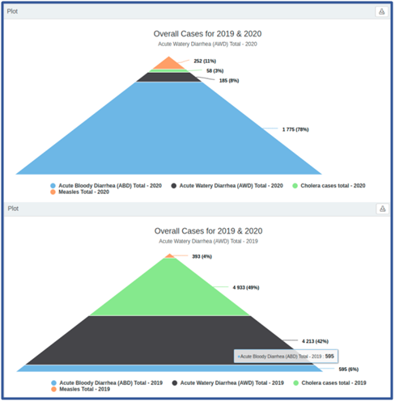
15.7 Plotting data on a tabular report chart
A tabular report is used to represent data in a table format. This format is useful because the data can be divided into different categories for easy analysis. For demonstration purposes, this guide uses the following example.
Example 1. Plot provincial total cholera cases data for Nambutu for 2020.
Select Menu > Analysis > Plot. Set Chart Type as Tabular Report > enter “Cholera Cases” as the Chart Title > select the location Nambutu > set Group By as Location > set Location type as Provinces > set Compare Years as No > select the Start date 2020-01-01 in the calendar > select the End date 2020-12-31 in the calendar.
Click on the Data tab > click on the add icon and select the desired indicator from the drop-down menu (e.g. Total cholera cases).
The chart is generated, as shown below:
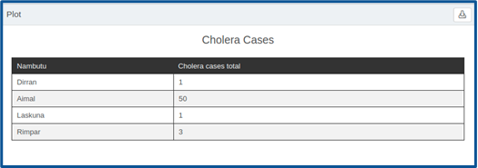
15.8 Downloading a chart as a PDF file
You can download any chart as a PDF file by clicking on the download icon at the top of the generated chart.
The following chapter explores the Mapping feature, using which you can represent EWARS data on a map.